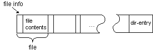

Feedback Form
|
|
Start of Tutorial > Start of Trail > Start of Lesson |
Search
Feedback Form |
The input and output streams in this lesson so far have been sequential access streams--streams whose contents must be read or written sequentially. While still incredibly useful, sequential access files are a consequence of a sequential medium such as magnetic tape. Random access files, on the other hand, permit nonsequential, or random, access to the contents of a file.So why might you need random access files. Consider the archive format known as "zip." Zip archives contain files and are typically compressed to save space. Zip archives also contain a dir-entry at the end that indicates where the various files contained within the zip archive begin:
 Suppose that you want to extract a specific file from a zip archive. If you use a sequential access stream, you have to do the following:On average, using this algorithm, you'd have to read half the zip archive before finding the file that you wanted to extract. You can extract the same file from the zip archive more efficiently using the seek feature of a random access file:
- Open the zip archive.
- Search through the zip archive until you located the file you wanted to extract.
- Extract the file.
- Close the zip archive.
This algorithm is more efficient because you only read the dir-entry and the file that you want to extract.
- Open the zip archive.
- Seek to the dir-entry and locate the entry for the file you want to extract from the zip archive.
- Seek (backwards) within the zip archive to the position of the file to extract.
- Extract the file.
- Close the zip archive.
The
RandomAccessFileclass in the
java.iopackage implements a random access file.
Unlike the input and output stream classes injava.io,RandomAccessFileis used for both reading and writing files. You create aRandomAccessFileobject with different arguments depending on whether you intend to read or write.
RandomAccessFileis somewhat disconnected from the input and output streams injava.io--it doesn't inherit from theInputStreamorOutputStream. This has some disadvantages in that you can't apply the same filters toRandomAccessFilesthat you can to streams. However,RandomAccessFiledoes implement theDataInputandDataOutputinterfaces, so if you design a filter that works for eitherDataInputorDataOutput, it will work on some sequential access files (the ones that implementedDataInputorDataOutput) as well as anyRandomAccessFile.
|
|
Start of Tutorial > Start of Trail > Start of Lesson |
Search
Feedback Form |